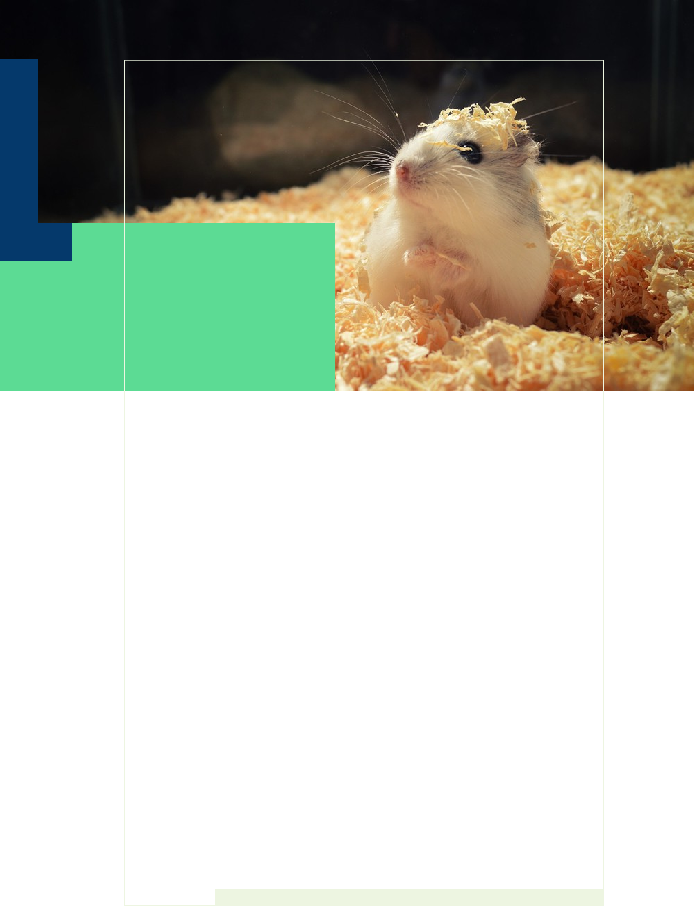
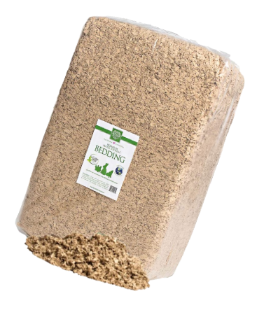
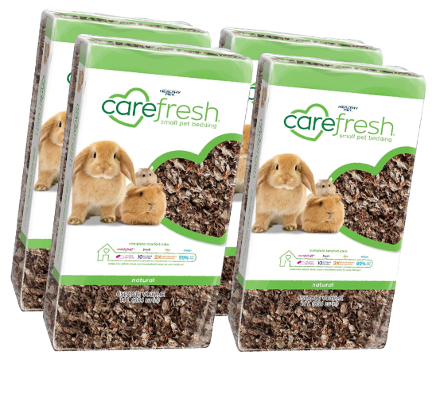
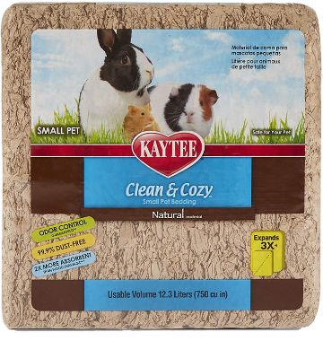
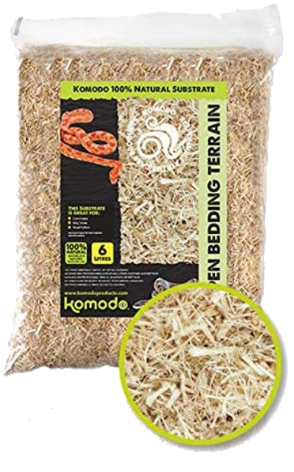

Hamsters like to build nests. It is their safe haven where they can curl up and sleep. Their nests are there to keep them warm, offer a familiar scent and is the perfect place to bury their hoards.
In the wild, a hamster would look to build their nest out of natural resources. For example, a Syrian hamster (which originates from the desert), would seek solace from the sun and predators by digging and creating a nest underground. Here they are well cossetted and are able to keep cool.
Campbell Russian hamsters, however, live out their days on dry verdant plains, so use grass and sheep’s wool to make their nests.
It is important that as responsible hamster owners we consider the needs of our pets and try and replicate their natural environment as much as possible.

Within your hamster’s cage you will find two different types of bedding. There is the substrate which lines the base of the cage, and the nesting material with which they can use to create a comfortable bed.

Here we look at the best materials to use for your hamster’s nest bedding.
ASPEN SHAVINGS
Aspen shavings are safe enough to use for hamster bedding. Although this option is cost-effective and natural-looking, it is not particularly comfortable for your hamster. Aspen shavings tend to also be less absorbent than other materials, so odor may become an issue.
PLANT-BASED PAPER FIBERS
Plant-based paper fibres are highly absorbent so are great at efficiently controlling odors. They are soft and squidgy, and some brands even offer a 99% dust-free option, which is great for your hamster’s health
PELLETED WOOD AND PAPER
Wood and recycled newspaper pellets offer good bedding materials since they don’t scatter and make a mess. They are also more absorbent than normal wood-based shavings. For long-haired hamster owners, pellets are also good as you do not need to worry about their hair getting tangled.
SHREDDED PAPER
Shredded paper is one of the most common types of hamster bedding materials. This paper-based material consists of long narrow stripes of confetti and can often come in a range of vibrant colors.
WHAT IS
SUBSTRATE?
Substrate is the technical term for the material used to line the bottom of your hamsters cage. It should be used in addition to your hamster’s bedding, which they also require in order to nest.
A good substrate should be absorbent so that it soaks up your hamster’s excrement, soft enough for them to walk on without causing injury and able to disguise a multitude of smells.Substrate is readily available to buy as wood chippings or sawdust. You must make sure that the material you choose:
Is dust-free to prevent any breathing problems. Has not been chemically treatedIt should not matter which breed of hamster you own, whether you have a Syrian on a Dwarf, they all need a dust-free environment and a super soft, absorbent substrate to run around on.
IS SAWDUST
SAFE FOR HAMSTER?
Sawdust is often used; however, it can irritate some hamsters eyes, nose and lungs and cause skin allergies.
Compressed paper bedding is a good choice if your hamsters is sensitive as it is softer, less harsh on small body parts and absorbs urine well.
That said, we have always used a particular brand of sawdust for our hamster and never had a problem. If you do change your substrate, I would recommend monitoring your hamster closely to check that they remain safe and healthy.
Always make sure that your sawdust is at least 3” deep so that your hamster has plenty to cushion them as they walk around, and that it is thick enough absorb any wee. If your hamster likes to burrow, then add a couple of extra inches for them to tunnel and play.

ALTERNATIVES
TO SAWDUST
Wood pulp bedding is a good alternative for those seeking something other than sawdust. It is a safe and healthy option as it is made from reclaimed pulp waste, so is free from inks, dyes, clay and harmful toxins
Some, such as the Carefresh brand, sanitize their bedding to 380 degrees to ensure that any bacteria, mold or fungus has been killed off before bagging.
Recycled paper is a great choice to line a hamster’s cage as it can absorb twice the amount of liquid than wood shavings or sawdust can, and helps to keep your hamster’s habitat fresher for longer.




1
2
3
4
Small Pet Select
Natural Paper Bedding
Carefresh Natural
Bedding
BEST HAMSTER
SAWDUST
TO BUY
For your hamster, their habitat is their home, so you want to make it as comfortable as possible. Therefore selecting a substrate that is soft, yet absorbent is really important.
Finding the best hamster substrate is key as you want the material to be dust free whilst providing a safe and odor less environment.